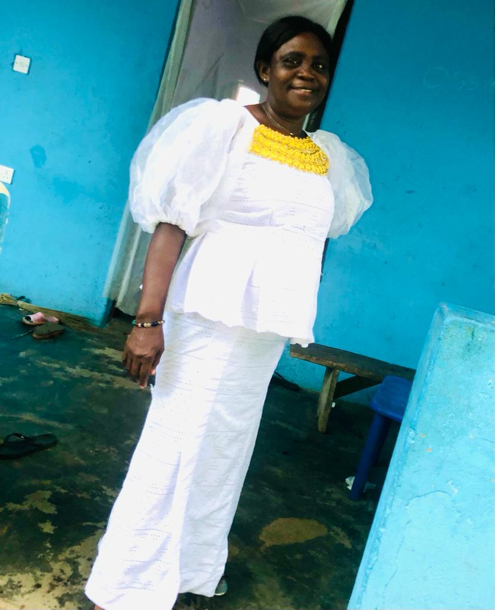

Edegbe-Kissodi Robert Hedzro | WDD 130
Hello there, I'm Robert from Nsawam, Ghana. A BYUi student. I'm still offering web and Computer Programming. I find swimming and riding a big fun.
Hello there, I'm Robert from Nsawam, Ghana. A BYUi student. I'm still offering web and Computer Programming. I find swimming and riding a big fun.